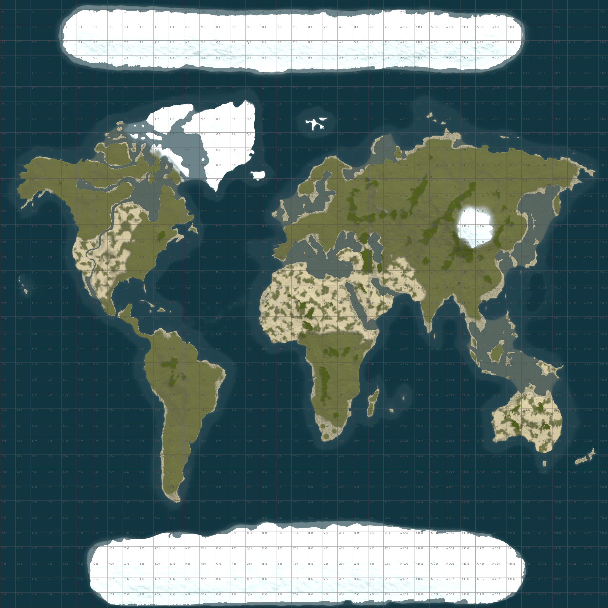

Proyectos
Aquí están algunos de mis proyectos:
Bellum:
Bellum es una serie de streamers creada por los streamers ElXokas, Carola, Agustabell y Ricoy. En esta serie participan todos los streamers mas grande de habla hispana, tales como Ibai, Auronplay, Vegetta777, WillyRex entre otros. En esta serie me encargue de realizar el mapa el cual fue un mix entre monumentos totalmente custom hechos a mano especialmente para esta serie, tambien algunos fueron comprados a otros map makers y tambien se utilizaron algunos monumentos originales del juego. Todo el terreno del mapa fue hecho desde 0 y cuidado al detalle por la importancia del proyecto, tarde en finalizarlo unos 4 meses
 Streamerland:
Streamerland:
Streamerland es una serie en la que participan todos los streamers hispanos de Rust. Es una competicion de 7 dias en la que 3 o 4 streamers son los lideres de una isla y en ella juegan unos 40 viewers. Por lo que cada isla tiene unos 45 jugadores que en estos 7 dias compiten por ver quienes son los mejores.
 Tambien hago mapas varios para servidores normales:
Tambien hago mapas varios para servidores normales:
Mi trabajo mas comun es hacer mapas para servidores normales en los que el mapa se optimiza para mejor jugabilidad y mayor rendimiento. Tambien otro tipo de mapas especiales como mapas con forma de paises o logos.
